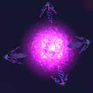

Conflux SpaceGreetings, pilot. I'm Indigo X'al-Zejar, Director of the TRI Bureau of Stellar Cartography, here to advise you of an exciting exploration opportunity. We now have active jumpgates that provide access into Conflux space. This provides us with a remarkable opportunity to collect some useful data. See if you can round up some gung-ho escorts when you go, though. The Conflux appear to be responding quite... warmly... to the presence of our ships. |
| Flux Space |
|
After extensive studies of Conflux activity near our jumpgates, TRI collected sufficient data to attempt experimental modification of the usual Samon gate technique on two anomalies. Operations on these two gates met with resounding success, yet unexpected results.  The experimental gates open into previously unknown sectors of space, sectors which have an indigenous gate network of their own, apparently of Conflux origin. The Bureau of Stellar Cartography has reported that, based on the limited observations that have been possible thus far from the alien sectors, no local stars can be identified. This gate network may be nowhere near known TRI space. For all we can tell, it could be in some other galaxy entirely. The lack of navigational references has in part been rectified by placement of standard TRI beacon transponders by our first-in scouts. The initial scout teams also made contact with several types of Conflux not previously seen. Most of those teams were lost in the process. We know some types of Conflux, sentients in particular, are capable of using our jumpgates for travel. The hazard introduced to Known Space by the presence of these gates is significant. Worse, the Conflux appear to more gregarious than anticipated, moving through their own space in groups we now refer to as "swarms". A Conflux swarm is nothing to trifle with, and some of these have shown a propensity to travel into our own regions of space. Swarms are displayed on the map when locations are known, and should be rigorously avoided by noncombatants. |